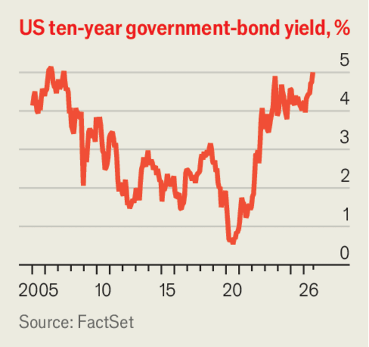

市场开始意识到富裕世界的借贷已经失控
Markets are waking up to the rich world's reckless borrowing
遗憾的是，各国政府仍在沉睡
- 几十年来，人们一直默认一个前提：把钱借给富裕国家的政府是安全的——本金和利息都能拿回来，利率由自由市场决定，也不会被通胀吃掉。但如今各国公共债务不断堆积，这个前提正在动摇。
- 自2000年以来，美国和英国的政府净债务占经济总量的比重已经涨到原来的三倍，法国和日本翻了一倍。除了战争或经济衰退时期，富裕国家的财政赤字很少像今天这么高。
- 问题的紧迫性在于利率。十年前借债便宜，债务规模大也还撑得住；现在利率高且上涨很快。作者测算，如果美国和英国必须马上按当前利率把所有债务重新借一遍，光是让债务占经济的比重不再上升，美国就需要增税或削减开支相当于经济总量4.7%的规模——比一年前翻了一倍还多。
- 雪上加霜的是，各国近年来越来越多地发短期债。短期债通常利息更低，看起来划算，但这也意味着利率一涨，很快就会传导到财政预算上；而且长期债券的买家（传统养老金）正在萎缩。短期债加上动荡的债市，是极易引爆的组合。
- 作者的核心判断是：问题并非无解——瑞士债务低、通胀低、利率也低，希腊这些年也把债务比重压下来了，说明有政治意愿就能做到。真正的麻烦在未来几年的政治：法国、美国、英国、德国都面临选举，而承诺大手大脚花钱的民粹政客正占上风。指望人工智能带来的增长奇迹来救场并不现实。
- 结论是：接下来大概会有更多像2022年英国特拉斯迷你预算那样的市场风暴。明智的政府会走向稳健预算，不负责任的政府则会玩财务花招。更危险的是经济衰退来临时——届时债券收益率未必会像过去那样下跌，曾经的避风港会变成危险地带。
金融世界里可靠的赌注并不多。过去几十年里有一条：大多数富裕国家的主权债券是安全的。把钱借给除最岌岌可危者之外的所有政府，出借人都可以确信自己能拿回本金，外加按自由市场决定的利率计算的利息，而且本金不会被通胀侵蚀掉。债券还有一个好处：经济衰退时它会升值，从而对冲股票的波动。而今天，随着公共债务不断堆积，这一切都受到了威胁。
自2000年以来，美国和英国的政府净债务占GDP的比重已经涨到原来的三倍。在法国和日本，这一比重翻了一倍。债务还在不断累积：除了战争时期或经济衰退期，富裕国家的财政赤字很少像今天这样高。
深入阅读
在2010年代，借债成本低廉，即便债务规模庞大也显得尚可承受。今天，收益率高企且在快速攀升，最近一轮上涨是因为市场预期伊朗战争会推高利率。果不其然，9月16日美联储加息，成为今年第五个加息的富裕世界主要央行。由于市场预期货币紧缩还会继续，十年期美国国债收益率已突破5%——上一次任何国家在这么长时间里站上这一门槛，还是二十年前的事。法国国债的利差已经离欧债危机时期的水平不远。沉睡了几十年的日本，收益率也在飙升。至于英国的国债，还是少说为妙。
2025年10月，本刊曾测算：如果美国和英国必须立即按当时通行的五年期债券收益率把所有债务重新融资一遍，那么两国都需要增税或削减开支，规模相当于GDP的2.3%，才能让债务占经济的比重停止上升。今天收益率更高了，美国这个数字已经翻倍以上，达到4.7%。英国即便已经勒紧腰带，这个数字也升到了2.7%。法国所需的调整规模为GDP的3.9%，高于一年前的3.1%。

幸运的是，现实世界里政府不必一次性把所有债务都重新融资。但它们近年来越来越倾向于发行短期债务，这意味着利率上升会以比过去更快的速度传导到财政预算上。发短债的诱惑在于通常更便宜。而且如今对长期债务的需求也在下降，因为长期渴望长债的固定收益型养老金正在萎缩。但短期债务加上动荡的债券市场，是一个极易引爆的组合。
现在解决问题还不算太晚。和其他富裕国家一样，瑞士人口也在老龄化，但它的财政状况良好——债务低、通胀低，债券收益率也相应地保持在低位。有动力的政府以前也削减过巨额赤字。瑞典在1990年代消灭了11%的赤字，办法是把削减开支、增税和提振增长的供给侧改革三管齐下。「做瑞士人还是做北欧人」或许不算现实的建议，但即便是「做希腊人」也管用。希腊已经大幅压低了债务占GDP的比重。今年夏天它发行的债券，收益率比法国还低。
麻烦在于未来几年的政治形势凶险。在法国，主张大把花钱的民粹主义者在2027年总统大选前声势正盛。在美国（2028年选总统），民主党和共和党竞相承诺开出越来越大的支票——字面意义上的支票，比如唐纳德·特朗普提出，如果共和党赢下中期选举的国会席位，就给民众每人发5000美元。英国和德国各自都有财政上大手大脚的民粹主义者，两国都将在2029年举行大选。
政客们很可能指望人工智能热潮带来的高速增长能奇迹般地把他们从痛苦的预算谈判中解救出来。韩国政府预计，来自芯片制造的税收将几乎完全消除其明年的预算赤字。但要把赤字驯服所需要的生产率增长，远高于大多数经济学家认为的合理水平；而且无论如何，更高的增长也会推高利率。
接下来会发生什么？在债务大国中，只有英国——它在2022年特拉斯那场灾难性的迷你预算后经历过一次市场反抗——有一个（半认真的）紧缩计划。可以预料其他地方会出现更多类似特拉斯的时刻。聪明的政府会用更稳健的预算来应对；不负责任的政府则会耍财务花招。美国财政部长斯科特·贝森特8月开始直接干预国债市场，试图压制收益率，但这是徒劳的。
如果发生经济衰退，更严重的麻烦就会到来。债券收益率在经济下行时未必会下跌。这在很多新兴市场常常不成立；而在1970年代，富裕国家也没能出现这种情况。即便收益率只下跌比往常更小的幅度，也会加剧经济痛感，并与失业率上升带来的财政冲击叠加。曾经是避风港的债券市场，将变成危险地带。■
《经济学人》订户可以订阅我们的观点通讯，它会汇集我们最精彩的社论、专栏、特约来论和读者来信。
本文刊载于印刷版《经济学人》社论栏目，原题为「Not your bond」
在这一栏目的目录中可发现更多本栏目及其他内容
社论、专栏、特约观点与读者来信，尽在一处
只要有政治意愿，有组织犯罪是可以战胜的
3分钟阅读
由无法无天之敌驾驭的急速变化的技术，或许就是战争的未来
3分钟阅读
美国想在保持对华领先的同时让技术变得安全，将步履维艰
5分钟阅读
3分钟阅读
3分钟阅读
4分钟阅读